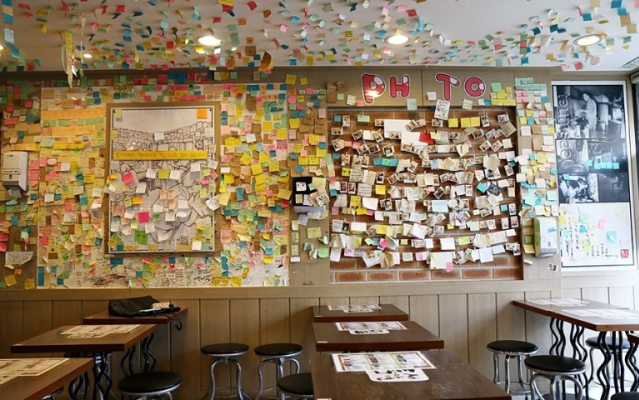
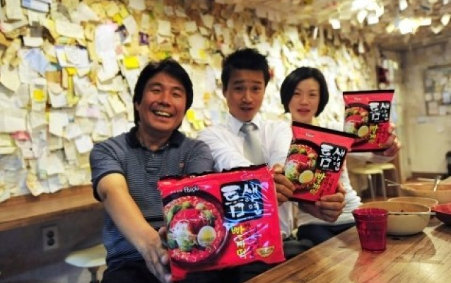
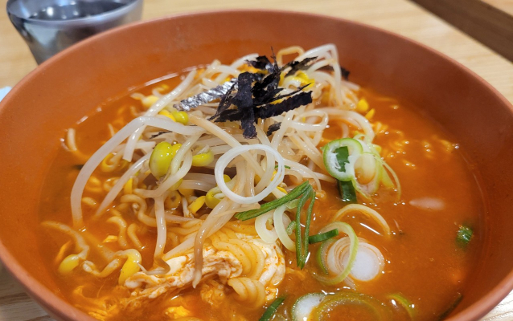

기업문화와 비전
틈새라면은 기업입니다.
우리의 사명 외국계열의 Family restaurant Fast-Food점이 대부분의 외식산업과 입맛을 점유한 상황에서 새로운 trends로 구미와 일본에서 각광받고 있는 매운맛을 토대로 한국인의 입맛에 맞는 프랜차이즈를 만든다는 계획 하에 설립 43년간의 라면스프 연구를 통한 계량화 된 스프맛을 기본으로한 Menu를 통해 틈새라면만의 맛과 문화를 형성하여, 저렴함과 간편의 대명사인 Noodle을 새로운 입맛과 틈새만의 이미지를 통해 브랜드화하여 기존시장의 대체효과와 신규시장의 창출을 목적으로 하여, 해외시장 진출을 통해 한국적 입맛의 세계화를 목적으로 한다.
BRAND POWER
-

- CULTURE
- 틈새에는 문화가 있습니다. 한국식 서비스 문화의 세계화 틈새는 우리의 문화를 수출하는 대표브랜드가 될것입니다.
-

- HUMAN
- 틈새에는 사람내음이 납니다. 사람을 남기는 기업,사람을 생각하는 기업 틈새가족과 함께 할 수 있는 쉼터가 될것입니다.
-

- FLAVOR
- 43년의 맛의 정신을 지킵니다. 장인정신으로 이어가는 브랜드 틈새의 한국적 입맛의 세계화가 이루어집니다.
틈새의 문화를 이해하지 못하는 대기업에게 의탁하기 보다는 작은 시작이지만 틈새만의 문화를 이어가는 한걸음을 더 중요하게 생각합니다. 아직은 기업으로서 걸음마 단계이지만 처음 명동 틈새라면에서 부터 현재까지의 43년간의 경험과 기술이 전문적 경영기업을 만나 대한민국의 라면 고유브랜드로 거듭나게 될 것입니다.